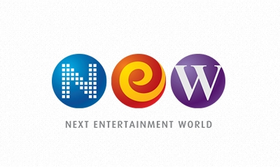

British Broadcasting Corporation
BBC(British Broadcasting Corporation)는 영국 런던에 본사를 둔 공영 방송사이다. 텔레비전, 라디오, 인터넷을 통해 시사 프로그램을 전 세계에 방영한다.
최종 업데이트
British Broadcasting Corporation는 어떤 브랜드인가
BBC는 영국의 공영 방송사로 BBC1, BBC2, BBC3, BBC4, CBBC, Ceebeebies, BBC News, BBC Parliament, BBC World 등 다수의 채널을 운영한다. 주력 방영 서비스인 BBC One과 BBC Two, BBC 라디오 1부터 5 라이브까지는 아날로그 주파수로 송신하며 나머지 채널은 디지털로 송신한다.
BBC Parliament는 영국의 유일한 정치 전문 채널이다. 과학, 역사, 사회, 물리, 지구과학, 고생물학 등을 주제로 한 다큐멘터리로도 유명하며 정확한 정보와 다양한 장르로 많은 시청자의 인기를 누리고 있다.
영국에 2만 6천여 명의 직원을 고용하고 있으며 1년 예산은 약 40억 파운드가 넘는다. 언론의 공정성과 중립성 면에서 매우 높은 평가를 받고 있다.
British Broadcasting Corporation는 어떻게 시작되고 성장했나
BBC는 1922년 영국 방송 유한 회사(British Broadcasting Company Ltd)로 출발했다. 창업자는 John Reith, 1st Baron Reith와 George Villiers, 6th Earl of Clarendon이다.
1922년 11월 런던(2LO)을 시작으로 버밍엄(5IT), 맨체스터(2ZY)에서 차례로 방송을 개시했다. 이후 왕실 면허(Royal Charter)를 받아 1927년 국영 기업이자 독립 회사인 영국 방송 공사(British Broadcasting Corporation)로 조직을 변경했다.
British Broadcasting Corporation의 브랜드 아이덴티티는 무엇인가
BBC는 상업 광고 없이 수신료만으로 운영되는 공영방송이라는 점, 그리고 언론의 공정성과 중립성에서 높은 평가를 받는다는 점에서 다른 방송사와 구분된다.
British Broadcasting Corporation의 대표 제품과 서비스는 무엇인가
BBC는 BBC1, BBC2, BBC3, BBC4, CBBC, Ceebeebies, BBC News, BBC Parliament, BBC World 등의 채널로 텔레비전과 라디오, 인터넷 서비스를 제공한다. BBC 라디오 1, 2, 3, 4와 5 라이브를 운영하며 BBC Parliament를 통해 정치 전문 방송도 송출한다.
과학, 역사, 사회, 물리, 지구과학, 고생물학을 주제로 한 다큐멘터리 제작으로도 잘 알려져 있다. 국내 방송에는 상업 광고가 없으며 수신료와 프로그램 판매를 통해 수익을 얻는다.
British Broadcasting Corporation는 지금 어떤 상태인가
BBC의 모기업은 영국 문화 미디어 스포츠부이며, 왕실 면허에 근거해 공영 방송으로 운영되고 있다. 영국 국내 방송에는 상업 광고가 없고 수신료로 재원을 조달하며, 수신료는 텔레비전·라디오·온라인 스트리밍 등 서비스별로 다르게 부과된다.
2013년 3월에는 텔레비전 센터의 모든 기능을 브로드캐스팅 하우스로 이전하며 폐쇄했다.
British Broadcasting Corporation 로고는 어떻게 변해왔나
자주 묻는 질문
British Broadcasting Corporation는 어느 나라 브랜드인가요?
British Broadcasting Corporation는 영국의 미디어·엔터테인먼트 브랜드입니다.
British Broadcasting Corporation는 언제 설립되었나요?
British Broadcasting Corporation는 1922년 설립되었습니다.
British Broadcasting Corporation의 브랜드 아이덴티티는 무엇인가요?
BBC는 상업 광고 없이 수신료만으로 운영되는 공영방송이라는 점, 그리고 언론의 공정성과 중립성에서 높은 평가를 받는다는 점에서 다른 방송사와 구분된다.
British Broadcasting Corporation의 대표 제품은 무엇인가요?
BBC는 BBC1, BBC2, BBC3, BBC4, CBBC, Ceebeebies, BBC News, BBC Parliament, BBC World 등의 채널로 텔레비전과 라디오, 인터넷 서비스를 제공한다.
British Broadcasting Corporation는 어느 기업이 소유하고 있나요?
BBC의 모기업은 영국 문화 미디어 스포츠부이며, 왕실 면허에 근거해 공영 방송으로 운영되고 있다.
British Broadcasting Corporation의 창업자는 누구인가요?
British Broadcasting Corporation의 창업자는 John Reith, 1st Baron Reith, George Villiers, 6th Earl of Clarendon입니다(위키데이터 기준).
British Broadcasting Corporation의 본사는 어디에 있나요?
British Broadcasting Corporation의 본사는 런던에 있습니다(위키데이터 기준).
출처와 검증
British Broadcasting Corporation 관련 참고: 공식 웹사이트 · 위키데이터 Q9531 · 한국어 위키백과 · 영어 위키백과. 브랜드명은 한글과 원어를 함께 표기하되 데이터에 없는 표기는 만들지 않습니다. 기원 국가·설립연도는 검수된 정의문에서 확인된 값을 우선하고, 없을 때만 공식 웹사이트 URL이 일치하는 위키데이터 개체의 값을 씁니다. 위키데이터 값은 2026-09-26 기준입니다.
브랜드 연대기에서 보기
함께 읽을 브랜드
 워너 브라더스Warner Bros. Entertainment미디어·엔터테인먼트
워너 브라더스Warner Bros. Entertainment미디어·엔터테인먼트 워너 브라더스 디스커버리Warner Bros. Discovery미디어·엔터테인먼트폭스 뉴스Fox News미디어·엔터테인먼트페르비 카날Channel One Russia미디어·엔터테인먼트
워너 브라더스 디스커버리Warner Bros. Discovery미디어·엔터테인먼트폭스 뉴스Fox News미디어·엔터테인먼트페르비 카날Channel One Russia미디어·엔터테인먼트 뉴스 코퍼레이션News Corporation미디어·엔터테인먼트
뉴스 코퍼레이션News Corporation미디어·엔터테인먼트
넥스트엔터테인먼트월드Next Entertainment World미디어·엔터테인먼트GMA 네트워크GMA Network, Inc.미디어·엔터테인먼트 Sveriges Television미디어·엔터테인먼트
Sveriges Television미디어·엔터테인먼트